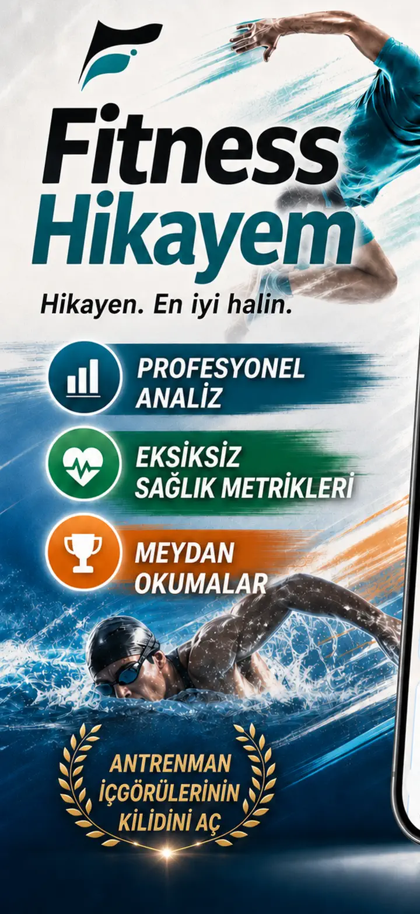
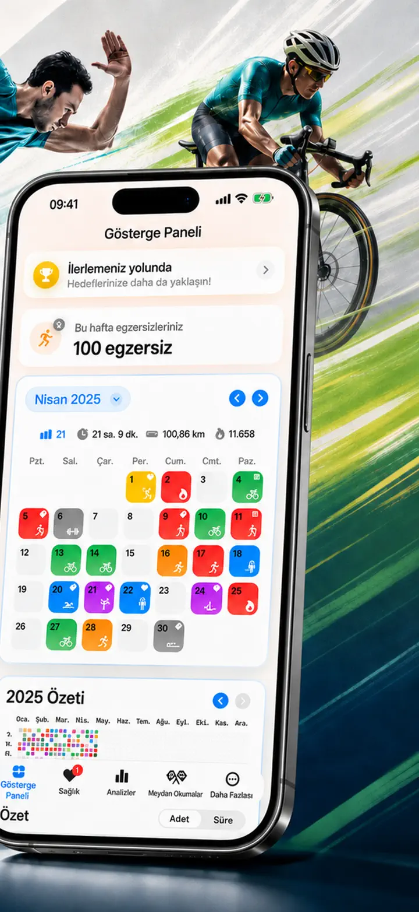
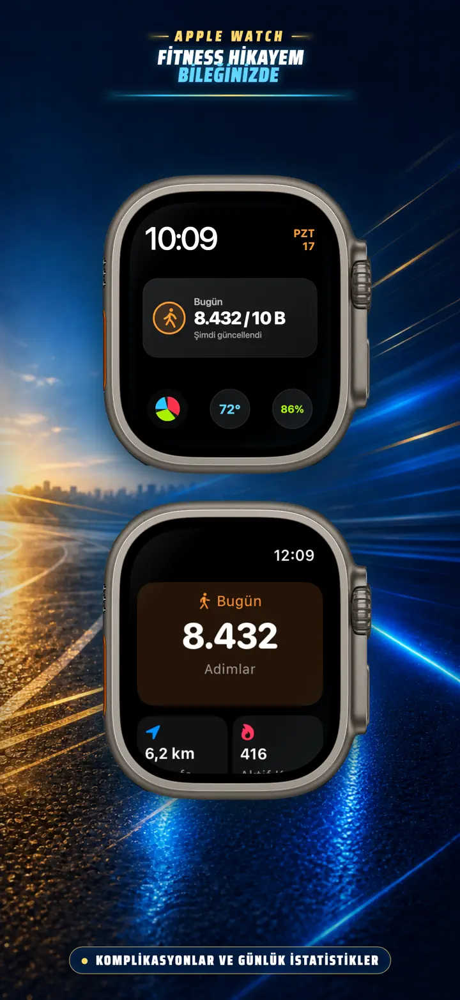
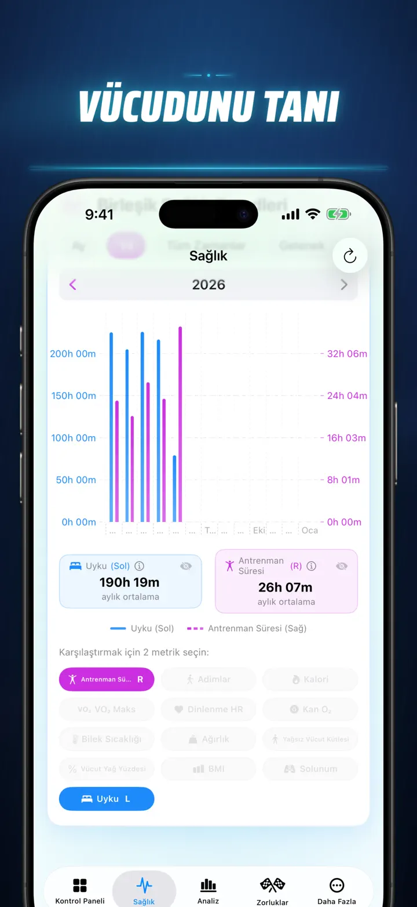
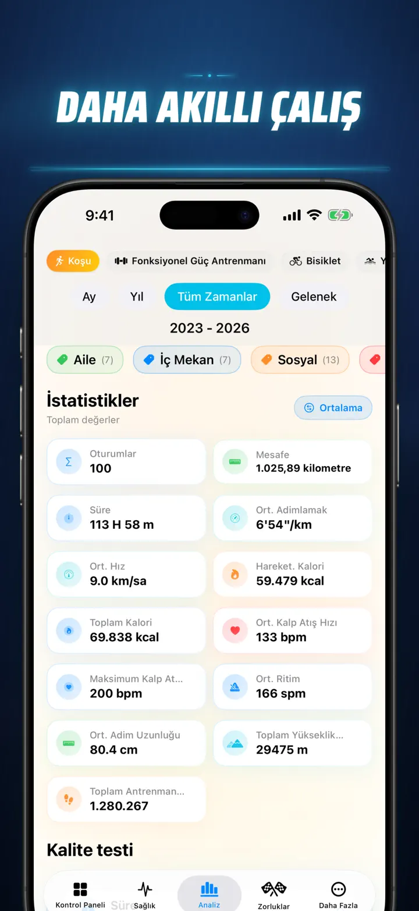
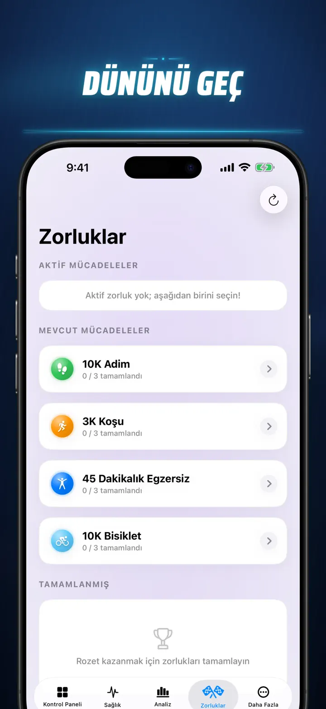
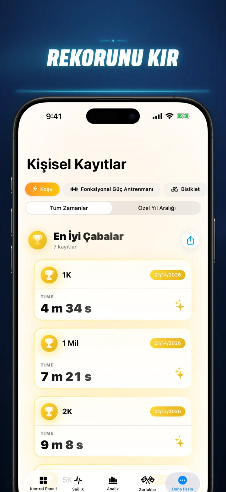
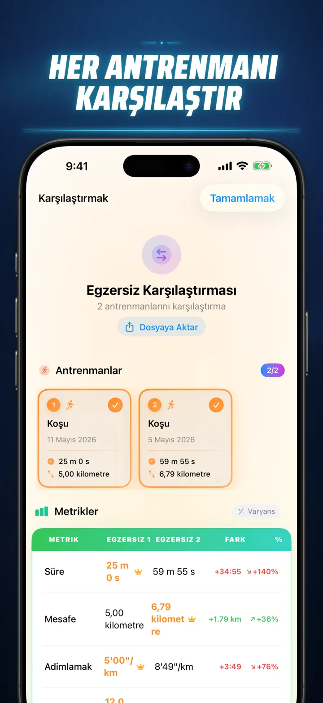
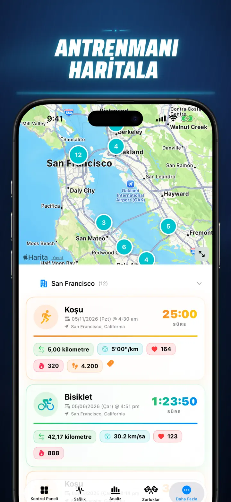
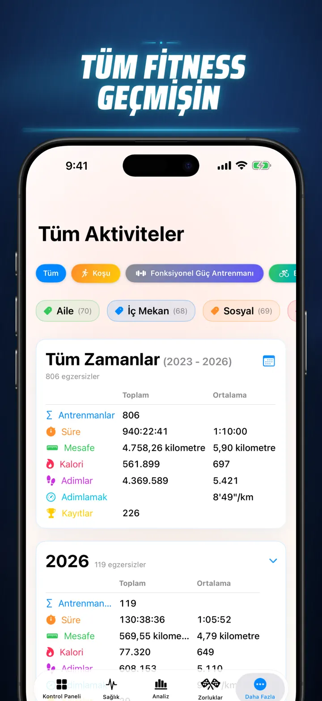

Fitness Hikayem
Antrenman verisi ve hedefler
Artık Apple Watch'ta: bugünkü adımlarınız dilediğiniz kadranda, ayrıca mesafe, kalori ve kat sayısını gösteren bir Bugün ekranı — doğrudan Apple Health'ten.
App Store’dan indir
Uygulama hakkında
Tahmin etmeyi bırak. Veriyi okumaya başla. Fitness Hikayem, Apple Health verilerini iOS üzerinde güçlü ve detaylı bir fitness analizine dönüştürür. Hesap yok. Gizli sunucu yok. Sadece tüm spor yolculuğun, anlaşılır grafiklerle karşında.
Uyku evrelerini takip ediyor, koşu kadansını inceliyor ya da maratonda kişisel rekor peşinde koşuyor olabilirsin. Bu, emeğinin hak ettiği hepsi bir arada kontrol paneli.
Apple Health ile senkronize olan her cihaz ve uygulamayla çalışır — Apple Watch, Garmin, Polar, Suunto, Zwift ve daha fazlası.
PRO SEVİYE ANALİZ
- Trend ve benchmark grafikleri: Her spor türü için medyanı, çeyrekleri ve aykırı değerleri gör.
- İnce filtreler: Geçmişini günün saati, mesafe, süre, tempo aralığı, irtifa, kadans ve adım uzunluğuna göre analiz et.
- Her şeyi sırala: Bugünkü mesafe, tempo, nabız ve diğer metrikleri tüm geçmişinle tek dokunuşla karşılaştır. Top 15% performans yakaladığını anında gör.
- Katkı grafiği: Tüm antrenman geçmişini GitHub tarzı bir heatmap üzerinde gör, günlük detaylara in.
ANTRENMAN DETAYLARI YENİDEN
- Akıllı haritalar: Açık hava rotalarını hız, yükseklik veya nabız bölgelerine göre renklendir. Çin harita düzeltmesi dahildir.
- Derin split analizi: Her tur için kilometre veya mil splitlerini tempo, irtifa, nabız ve kadansla incele.
- Nabız bölgeleri: Yaşına ve dinlenik nabzına göre kişiselleştirilmiş 1-5 bölgelerinde geçirdiğin süreyi gör.
- Zengin bağlam: Her antrenmana fotoğraf, zengin metin notu, 1-10 efor puanı ve özel etiket ekle.
SAĞLIK KONTROL MERKEZİ
- Apple Watch'un ölçtüğü her şey tek yerde, günlük, haftalık ve yıllık trendlerle.
- Kardiyo sağlığı: Dinlenik nabız, VO2 Max, kandaki oksijen ve solunum hızı.
- Vücut kompozisyonu: Kilo, vücut yağ yüzdesi, yağsız kütle ve BMI trend göstergeleriyle.
- Aktivite ve toparlanma: Saatlik adımlar, aktif ve bazal kaloriler, bilek sıcaklığı sapmaları.
- Gelişmiş uyku takibi: Derin, Core, REM ve uyanık evreleri gece gece görselleştir.
- Korelasyonlar: Birden fazla sağlık metriğini üst üste koy; uykunun nabzı, kilonun VO2 Max'i nasıl etkilediğini gör.
KARŞILAŞTIR VE YARIŞ
- En fazla 10 antrenmanı yan yana karşılaştır, metrikleri split bazında incele.
- Karşılaştırmaları farklı veri araçlarıyla analiz etmek için dışa aktar.
- 1K, 5K, 10K, yarı maraton, maraton ve özel mesafelerde kişisel rekorları otomatik takip et.
- Story Timeline ile tüm dönüm noktalarını, rekorları ve antrenmanları kronolojik gör.
VERİN HER YERDE
- Global harita: Spor yaptığın tüm yerleri etkileşimli dünya haritasında gör.
- Güçlü dışa aktarma: Tüm geçmişi veya seçtiğin aralıkları CSV ya da JSON olarak al; splitler, vücut metrikleri ve metadata dahil.
- iCloud Sync: Favoriler, etiketler, notlar ve puanlar cihazlarında senkronize kalır.
- Önce gizlilik: Verin sende kalır.
Terin bir hikaye anlatıyor. Şimdi onu okuma zamanı. Fitness Hikayem'i bugün indir.
Privacy Policy: https://masawata.net/privacy-policy.html Terms Of Service: https://www.apple.com/legal/internet-services/itunes/dev/stdeula/
Ekran görüntüleri









Fitness Hikayem
Artık Apple Watch'ta: bugünkü adımlarınız dilediğiniz kadranda, ayrıca mesafe, kalori ve kat sayısını gösteren bir Bugün ekranı — doğrudan Apple Health'ten.
App Store’dan indir